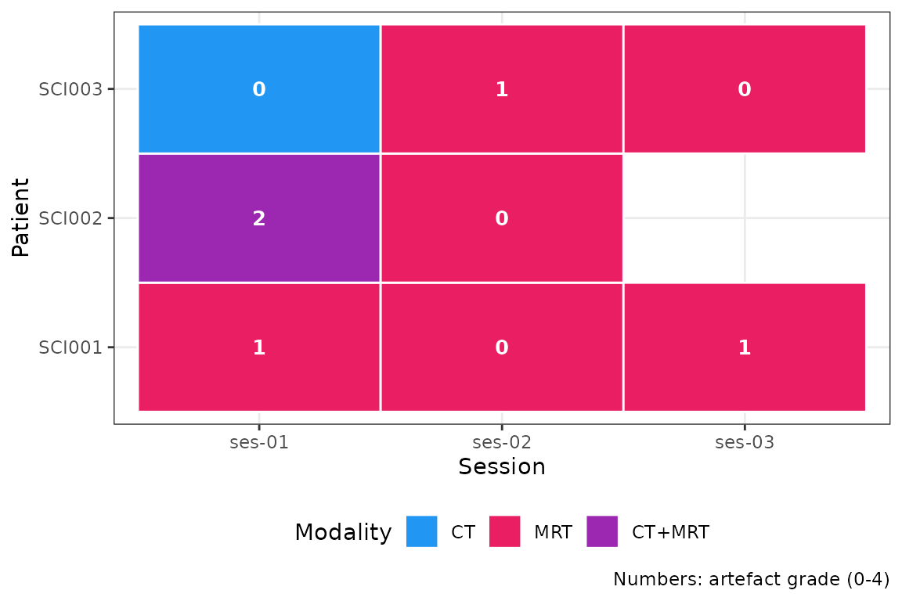

Overview
The SCI imaging workflow has 8 sequential steps, each performed by
its own function (Spinal Cord Toolbox, ‘dcm2niix’ and ‘pydicom’
wrappers). sci_run_pipeline() checks the project and
returns this plan, naming the function to run for every requested
step.
sci_run_pipeline() is a planner, not a runner:
- it does not call any external tool and does not read or write images;
- it does not look at existing outputs, so every
requested step is
"pending"(step 2 is"skipped"unlessanonymize = TRUE); -
sci_pipeline_status()is the function that reports what exists on disk.
The code in this vignette runs on a temporary project and the synthetic example registry; nothing here needs the external tools.
Pipeline Steps
| Step | Name | Function | Tool | Output |
|---|---|---|---|---|
| 1 | DICOM metadata extraction | extract_dicom_metadata() |
pydicom | metadata CSV |
| 2 | Anonymisation (optional) | anonymize_dicom() |
pydicom | anonymised DICOMs + mapping |
| 3 | DICOM to NIfTI conversion | convert_batch() |
dcm2niix | .nii.gz files |
| 4 | Spinal cord segmentation | sct_segment_sc() |
SCT | _seg.nii.gz |
| 5 | Lesion segmentation | sct_segment_lesion() |
SCT (SCIsegV2) |
_lesion_seg.nii.gz, _sc_seg.nii.gz
|
| 6 | Vertebral labelling | sct_label_vertebrae() |
SCT | _seg_labeled.nii.gz |
| 7 | Parameter extraction |
sct_analyze_lesion(),
sct_process_segmentation()
|
SCT |
_analysis.xlsx, _csa.csv
|
| 8 | Merge & export |
save_table(), save_rds()
|
R | combined dataset |
Planning the Pipeline
library(scimagR)
proj <- file.path(tempdir(), "walkthrough-study")
sci_create_project(proj, open = FALSE)
#>
#> ── Creating SCI project: SCI Imaging Analysis ──────────────────────────────────
#> ✔ Directory structure created.
#> ✔ Templates created.
#> ✔ Project created at /tmp/Rtmpae89hT/walkthrough-study
#> ℹ Next steps:
#> 1. Place DICOM files in data/raw/dicom/
#> 2. Fill in data/metadata/imaging_registry.csv
#> 3. Fill in data/metadata/clinical_data.csv
#> 4. Plan the processing steps with `sci_run_pipeline()`
status <- sci_run_pipeline(
project_dir = proj,
steps = 1:8,
anonymize = FALSE
)
#>
#> ── Step 1: DICOM metadata extraction ──
#>
#> ℹ Run `extract_dicom_metadata()` for this step.
#> Step 2 (Anonymisation): skipped (anonymize = FALSE)
#> ── Step 3: DICOM to NIfTI conversion ──
#>
#> ℹ Run `convert_batch()` for this step.
#>
#> ── Step 4: Spinal cord segmentation ──
#>
#> ℹ Run `sct_segment_sc()` for this step.
#>
#> ── Step 5: Lesion segmentation (SCIsegV2) ──
#>
#> ℹ Run `sct_segment_lesion()` for this step.
#> ! QC PAUSE: review the lesion segmentations before steps 6-8.
#> Check the QC reports (`qc_dir` or `sct_generate_qc()`).
#> ── Step 6: Vertebral labelling ──
#>
#> ℹ Run `sct_label_vertebrae()` for this step.
#>
#> ── Step 7: Parameter extraction ──
#>
#> ℹ Run `sct_analyze_lesion() and sct_process_segmentation()` for this step.
#>
#> ── Step 8: Merge & export ──
#>
#> ℹ Run `save_table() and save_rds()` for this step.
#>
#> ── Pipeline Summary ──
#>
#> 7 pending, 1 skipped
status
#> # A tibble: 8 × 4
#> step name status message
#> <int> <chr> <chr> <chr>
#> 1 1 DICOM metadata extraction pending run extract_dicom_metadata()
#> 2 2 Anonymisation skipped anonymize = FALSE
#> 3 3 DICOM to NIfTI conversion pending run convert_batch()
#> 4 4 Spinal cord segmentation pending run sct_segment_sc()
#> 5 5 Lesion segmentation (SCIsegV2) pending run sct_segment_lesion()
#> 6 6 Vertebral labelling pending run sct_label_vertebrae()
#> 7 7 Parameter extraction pending run sct_analyze_lesion() and sct…
#> 8 8 Merge & export pending run save_table() and save_rds()Planning Individual Steps
Plan only specific steps by setting the steps argument,
then run the function each row names:
# Just the DICOM conversion
sci_run_pipeline(proj, steps = 3, verbose = FALSE)
#> # A tibble: 1 × 4
#> step name status message
#> <int> <chr> <chr> <chr>
#> 1 3 DICOM to NIfTI conversion pending run convert_batch()
# The segmentation steps
sci_run_pipeline(proj, steps = 4:5, verbose = FALSE)
#> # A tibble: 2 × 4
#> step name status message
#> <int> <chr> <chr> <chr>
#> 1 4 Spinal cord segmentation pending run sct_segment_sc()
#> 2 5 Lesion segmentation (SCIsegV2) pending run sct_segment_lesion()The QC Pause
After step 5 (lesion segmentation), stop for manual QC before steps 6–8. This is critical: automated lesion segmentation must be visually verified before extracting quantitative parameters. The plan reminds you of it:
invisible(sci_run_pipeline(proj, steps = 5))
#>
#> ── Step 5: Lesion segmentation (SCIsegV2) ──
#>
#> ℹ Run `sct_segment_lesion()` for this step.
#> ! QC PAUSE: review the lesion segmentations before steps 6-8.
#> Check the QC reports (`qc_dir` or `sct_generate_qc()`).
#>
#>
#> ── Pipeline Summary ──
#>
#>
#>
#> 1 pending, 0 skippedDuring the QC pause:
- Open the QC HTML reports (written to
qc_dirofsct_segment_lesion()or bysct_generate_qc()), for example indata/qc/ - Grade each segmentation in the QC log
- Re-run failed segmentations if needed
- Continue with steps 6–8
Checking Pipeline Status
sci_pipeline_status() scans
data/nifti/<pat_id>/<session>/ for the files
the steps write. Here two sessions are mocked with empty files:
ses1 <- file.path(proj, "data", "nifti", "SCI001", "ses-01")
ses2 <- file.path(proj, "data", "nifti", "SCI001", "ses-02")
dir.create(ses1, recursive = TRUE)
dir.create(ses2, recursive = TRUE)
file.create(file.path(ses1, c("t2.nii.gz", "t2_seg.nii.gz",
"t2_lesion_seg.nii.gz",
"t2_seg_labeled.nii.gz")))
#> [1] TRUE TRUE TRUE TRUE
file.create(file.path(ses2, "t2.nii.gz"))
#> [1] TRUE
sci_pipeline_status(proj)
#> # A tibble: 2 × 8
#> pat_id session converted sc_seg lesion_seg vert_labels qc_done
#> <chr> <chr> <lgl> <lgl> <lgl> <lgl> <lgl>
#> 1 SCI001 ses-01 TRUE TRUE TRUE TRUE FALSE
#> 2 SCI001 ses-02 TRUE FALSE FALSE FALSE FALSE
#> # ℹ 1 more variable: params_extracted <lgl>This returns a tibble showing which outputs exist for each patient and session.
Artefact Grading Strategy
After visual QC, assign artefact grades (0-4) in the imaging registry:
- 0 (none): Perfect image quality
- 1 (mild): Minor artefacts, measurements reliable
- 2 (moderate): Visible artefacts, measurements acceptable
- 3 (severe): Major artefacts, measurements unreliable
- 4 (non-evaluable): Cannot be analysed
Use filter_evaluable() to exclude sessions with grade
> 2, and log_exclusion() to record each step for a flow
diagram:
registry <- validate_registry(
system.file("extdata", "example_registry.csv", package = "scimagR")
)
#> ✔ Registry validation passed.
evaluable <- filter_evaluable(registry, max_artifact = 1)
#> Filtered: 8 -> 6 (2 excluded)
log_exclusion("Artefact grade <= 1, MRI", nrow(registry), nrow(evaluable),
"artifact_grade > 1 or CT only")
#> # A tibble: 1 × 5
#> step n_before n_after n_excluded reason
#> <chr> <int> <int> <int> <chr>
#> 1 Artefact grade <= 1, MRI 8 6 2 artifact_grade > 1 or CT…Coverage Matrix
After processing, check your data coverage:
plot_coverage(registry)
This tile plot shows which modalities are available for each patient at each time point, with artefact grades overlaid.
Resuming After Interruption
Because sci_run_pipeline() does not track progress, use
sci_pipeline_status() after an interruption to see where to
continue, and re-run the step functions: the SCT wrappers skip work
whose output file already exists (unless
overwrite = TRUE).